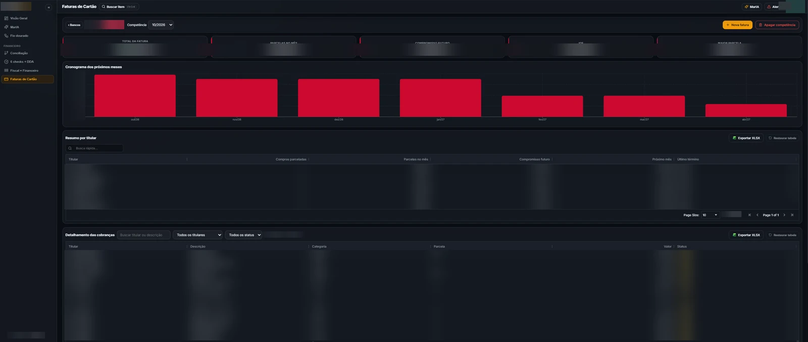

Controle de Cartões
Faturas de vários bancos reunidas em uma única visão.
- O problema
- Analisar as faturas de cada banco, uma a uma, em planilha.
- O que construí
- Sistema que lê as faturas (Excel e PDF), projeta as parcelas e gera indicadores de compromisso futuro.
- Resultado
- Visão consolidada, sem exportação nem análise manual. Roda dentro de um sistema corporativo criado pela TI.
- Ferramentas
- IA
- Python
- SQL
- Excel avançado
- Leitura de PDF
- GitHub